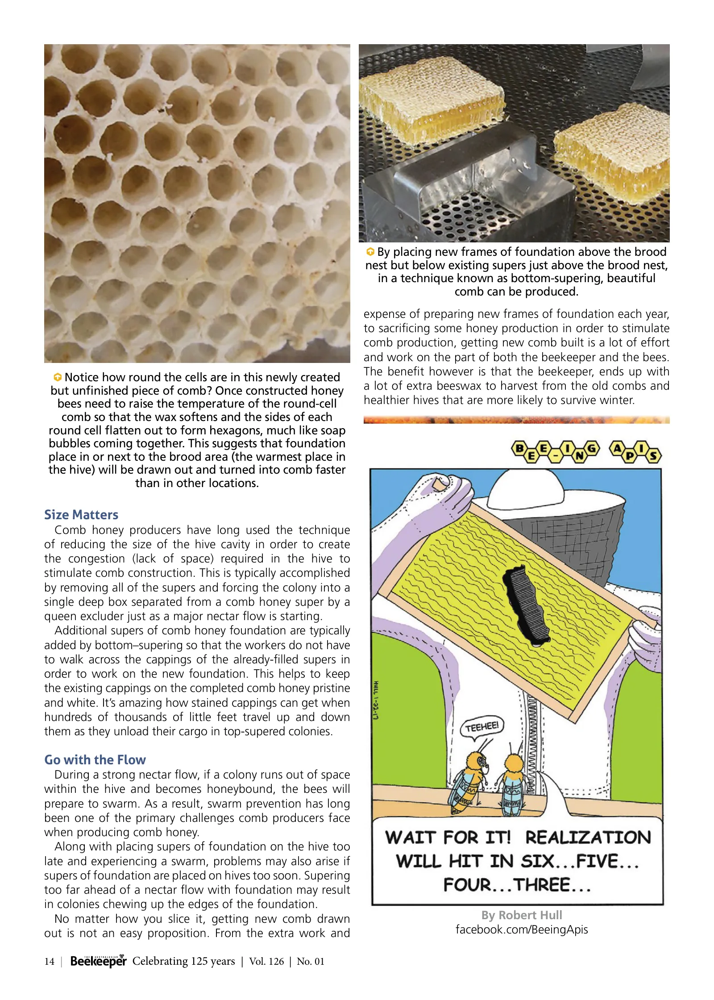

Size Matters
Comb honey producers have long used the technique
of reducing the size of the hive cavity in order to create
the congestion (lack of space) required in the hive to
stimulate comb construction. This is typically accomplished
by removing all of the supers and forcing the colony into a
single deep box separated from a comb honey super by a
queen excluder just as a major nectar flow is starting.
Additional supers of comb honey foundation are typically
added by bottom–supering so that the workers do not have
to walk across the cappings of the already-filled supers in
order to work on the new foundation. This helps to keep
the existing cappings on the completed comb honey pristine
and white. It’s amazing how stained cappings can get when
hundreds of thousands of little feet travel up and down
them as they unload their cargo in top-supered colonies.
Go with the Flow
During a strong nectar flow, if a colony runs out of space
within the hive and becomes honeybound, the bees will
prepare to swarm. As a result, swarm prevention has long
been one of the primary challenges comb producers face
when producing comb honey.
Along with placing supers of foundation on the hive too
late and experiencing a swarm, problems may also arise if
supers of foundation are placed on hives too soon. Supering
too far ahead of a nectar flow with foundation may result
in colonies chewing up the edges of the foundation.
No matter how you slice it, getting new comb drawn
out is not an easy proposition. From the extra work and
Notice how round the cells are in this newly created
but unfinished piece of comb? Once constructed honey
bees need to raise the temperature of the round-cell
comb so that the wax softens and the sides of each
round cell flatten out to form hexagons, much like soap
bubbles coming together. This suggests that foundation
place in or next to the brood area (the warmest place in
the hive) will be drawn out and turned into comb faster
than in other locations.
By placing new frames of foundation above the brood
nest but below existing supers just above the brood nest,
in a technique known as bottom-supering, beautiful
comb can be produced.
expense of preparing new frames of foundation each year,
to sacrificing some honey production in order to stimulate
comb production, getting new comb built is a lot of effort
and work on the part of both the beekeeper and the bees.
The benefit however is that the beekeeper, ends up with
a lot of extra beeswax to harvest from the old combs and
healthier hives that are more likely to survive winter.
By Robert Hull
14 |
Celebrating 125 years | Vol. 126 | No. 01